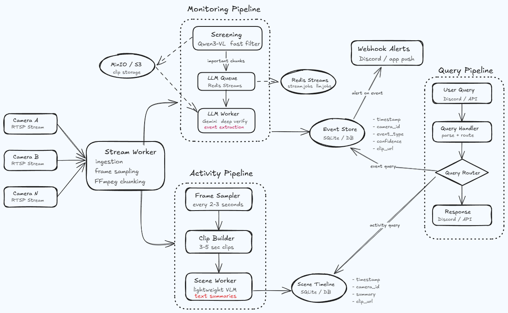
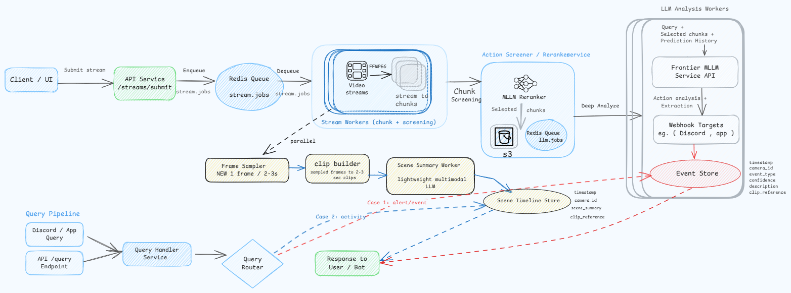
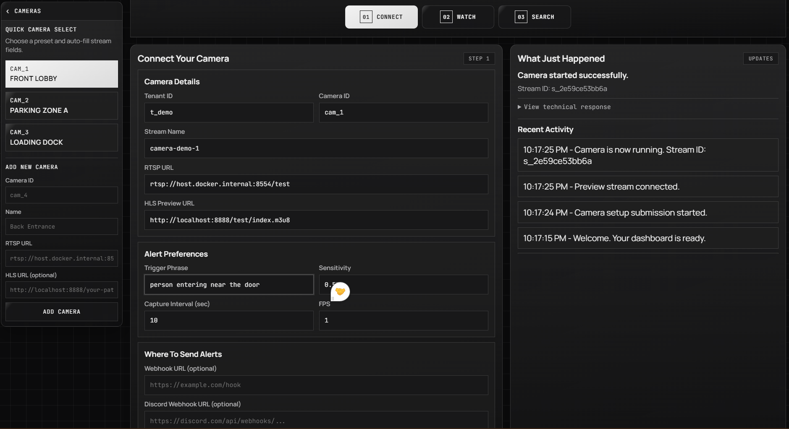
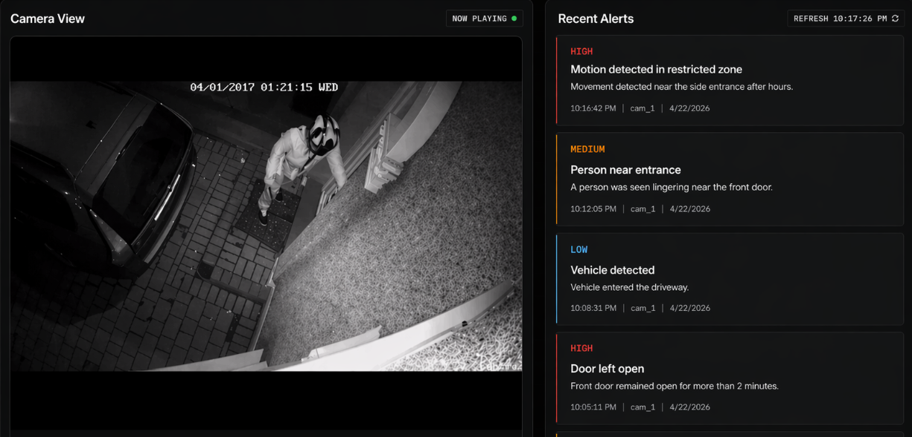
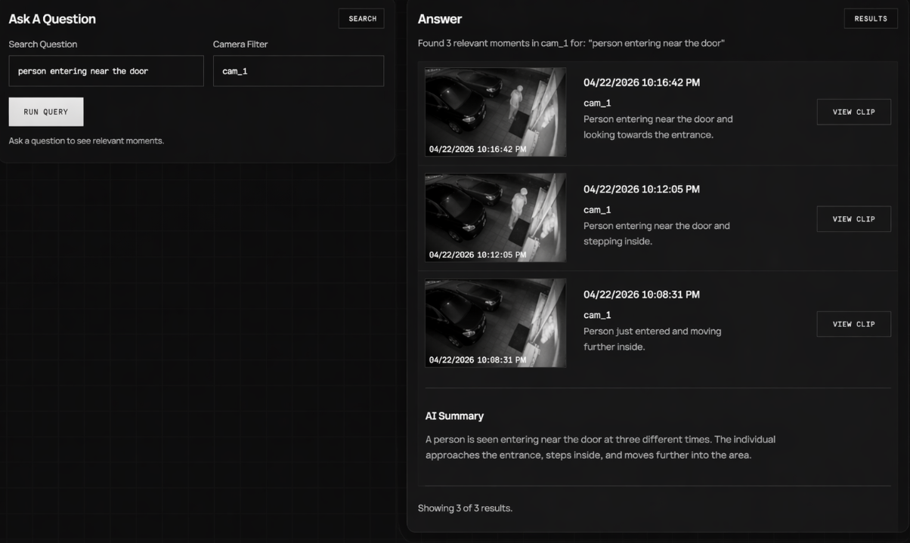

open source — video intelligence
Vigilens monitors live RTSP streams continuously, detects events from natural-language queries, and makes every minute of footage searchable after the fact.
The camera nobody watches
A few months ago I noticed something strange about surveillance systems.
Modern cameras capture incredibly detailed footage, yet the way we interact with them hasn't changed much. A camera records. Something happens. A person opens the footage later and starts searching.
The camera saw everything. The problem is that nobody was actually watching.
That observation eventually became Vigilens - an experiment in turning live video streams into something that can understand, remember, and answer questions about what it sees.
Architecture
Most footage is boring. Hallways stay empty. Cars stay parked. Nothing happens.
Sending every second of video to a frontier multimodal model would be wasteful. The system therefore starts with a lightweight screening stage - a Qwen3-VL reranker that filters frames before anything expensive runs. Only relevant chunks make it to Gemini for structured verification.
Three purpose-built pipelines coordinate through Redis Streams consumer groups. Object storage holds clips; SQLite holds all queryable state.


POST /streams/submit enqueues the stream jobllm.jobsevents table with dedupe guardscene.jobsscene_timeline with compaction supportPOST /query accepts natural language + optional camera filterevent or activity path automaticallyDemo
Three views: system configuration, live streaming with alerts, and historical query.



Memory
Detection is only half the problem. A system that alerts but can't answer questions about the past isn't much better than a passive archive.
Every verified event and every scene summary lands in SQLite with a timestamp, camera ID, clip reference, and confidence score. The query endpoint accepts plain English and routes automatically - to the event store for specific incidents, to the activity timeline for broader questions about what was happening.
The result is footage you can actually ask things.
Reliability
Production deployments need to survive worker crashes, duplicate events, and disk pressure. Each of these is addressed explicitly.
Redis Streams consumer groups prevent multiple workers from processing the same job simultaneously.
Stale messages are automatically reclaimed via XAUTOCLAIM after a worker crash.
A dedupe_key on every event row prevents duplicate inserts across retries.
In-memory frame sampling for the scene branch - no frame dump files, controlled disk growth.
Observability
Every API call, worker job, and LLM invocation is captured end-to-end. Large payloads like raw video matrices are dynamically filtered from the UI. Tracing safely no-ops when credentials are absent.
Real-time insights into submit_stream and query executions.
End-to-end tracing of stream consumption and LLM processing jobs.
Prompts, multimodal verification latency, and output token counts.
Deduplication metrics and database persistence timing.
VIGILENS_OPIK_ENABLED=true
OPIK_PROJECT_NAME="vigilens"
OPIK_WORKSPACE="your-workspace-name"
OPIK_API_KEY="your-opik-api-key"Implementation Notes
Prerequisites: Python 3.11+, FFmpeg on PATH, Redis, an S3-compatible store (MinIO), a Screener endpoint (Qwen3-VL, deployable on Modal), and a Gemini API key.
# 1. install
python -m venv env && source env/bin/activate
pip install -e . && pip install -e ".[test]"
# 2. configure
cp .env.example .env
# set REDIS_URL, S3_ENDPOINT, S3_BUCKET,
# AWS_ACCESS_KEY_ID, AWS_SECRET_ACCESS_KEY,
# SCREENER_BASE_URL, SCREENER_API_KEY, LLM_API_KEY
# 3. init db
make db-init
# 4. run services (separate terminals)
make api
make stream-worker
make llm-worker
make scene-workercurl -X POST http://localhost:8000/streams/submit \
-H "Content-Type: application/json" \
-d '{
"camera_id": "cam_1",
"rtsp_url": "rtsp://example.local/live",
"trigger_queries": [
{"query": "person falling", "threshold": 0.55},
{"query": "fire", "threshold": 0.70}
],
"webhook_urls": ["https://example.com/webhook"],
"chunk_seconds": 10,
"fps": 1
}'curl -X POST http://localhost:8000/query \
-H "Content-Type: application/json" \
-d '{"query": "did someone fall", "camera_id": "cam_1"}'{
"route": "event",
"results": [{
"source": "event",
"timestamp": "2026-04-15 12:00:00",
"camera_id": "cam_1",
"summary": "person fell near stairs",
"clip_url": "https://...",
"confidence": 1.0
}]
}| table | purpose | key fields |
|---|---|---|
| streams | Stream lifecycle state | queued · processing · completed · failed |
| events | Verified event memory | dedupe_key, clip_url, confidence |
| scene_timeline | Activity summary memory | summary, compaction support |
uv run --active pytest
make test-unit
make test-integration
make test-contractClosing thoughts
For decades, the answer lived somewhere inside hours of footage.
VigiLens explores a different possibility - one where cameras don't just record events, but help us understand them.